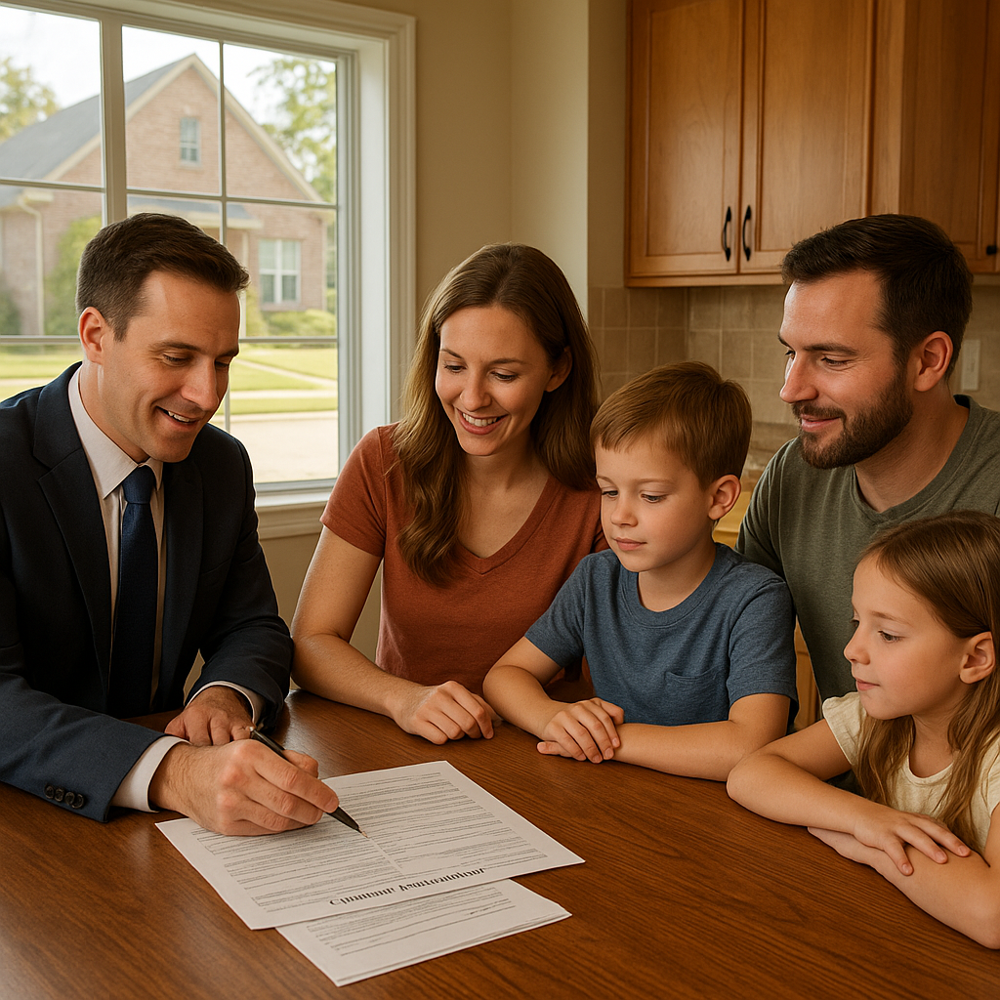

I'm Bond Peter Njoku, a mortgage loan officer in Garland, and roughly half of the DFW contracts crossing my desk right now have a seller concession in them. The current data puts it at about 49% of DFW closings, with a median concession above $17,000. That is an unusual amount of money moving across closing tables in this market.
And most of it is being spent badly.
The default is to dump the whole concession against closing costs, because that's what the word "concession" suggests. But closing costs are a one-time expense, and your interest rate is a thirty-year expense. The highest-value thing you can usually do with a seller's dollars is buy your rate down permanently — and almost nobody publishes the math showing you how far a given concession actually goes.
I've written about how to negotiate concessions in this market separately. This post is purely the conversion: dollars in, points out, rate down, and what it's worth per month.
How does a discount point actually lower my rate?
A discount point is prepaid interest. One point costs 1% of your loan amount — not the purchase price, which is a distinction that matters — and buys a permanent reduction in your interest rate for the full term of the loan.
The working rule of thumb is that one point buys about 0.25% of rate. I want to be straight that it is a rule of thumb and not a law. Actual point pricing comes off a daily rate sheet, varies with your credit score and loan-to-value, and shows diminishing returns — the first point usually buys more rate than the third. Any lender quoting you a buydown should hand you the actual pricing for your file, not a rule of thumb. For planning, 0.25% per point is close enough, and that's what I use below.
Three things to understand before the tables. The points must be paid at closing, which is why a seller concession is such an efficient source of funds. The seller's dollars must be written into the contract — a verbal agreement buys nothing. And concessions cannot fund your down payment; they pay closing costs, prepaid items and points only.
How many points will my seller concession buy?
Here's the table the ranking pages don't have. First, what one point costs at common DFW loan sizes, and what each tier of concession spending buys:
| Concession spent on points | $300,000 loan | $350,000 loan | $400,000 loan | Approx. rate reduction |
|---|---|---|---|---|
| Cost of 1 point | $3,000 | $3,500 | $4,000 | ~0.25% |
| $6,000 | 2.00 points | 1.71 points | 1.50 points | 0.38% – 0.50% |
| $9,000 | 3.00 points | 2.57 points | 2.25 points | 0.56% – 0.75% |
| $11,000 | 3.67 points | 3.14 points | 2.75 points | 0.69% – 0.92% |
| $14,000 | 4.67 points | 4.00 points | 3.50 points | 0.88% – 1.17% |
| $17,000 | 5.67 points | 4.86 points | 4.25 points | 1.06% – 1.42% |
Now the critical adjustment, and it's where buyer expectations break. The whole concession does not reach your rate. Closing costs and prepaid items come out first, and on a typical DFW purchase that's $5,000 to $7,000 — title fees, recording, the appraisal, prepaid interest, your first year of homeowners insurance, and the initial tax and insurance escrow deposit.
So on a $350,000 purchase with 5% down — a $332,500 loan — a $17,000 concession realistically works out like this:
| Step | Amount |
|---|---|
| Seller concession negotiated | $17,000 |
| Less closing costs and prepaids | −$6,000 |
| Available for discount points | $11,000 |
| Cost of one point on a $332,500 loan | $3,325 |
| Points purchased | 3.31 |
| Approximate rate reduction | ~0.80% (7.00% → 6.20%) |
| Monthly payment at 7.00% | $2,212 |
| Monthly payment at 6.20% | $2,036 |
| Monthly savings | $176 |
That is $176 a month, every month, for as long as you keep the loan — $2,112 a year, $10,560 over five years, and more than $63,000 across a full thirty-year term. Out of a concession you negotiated, not cash you brought.
What's the break-even on buying points?
Break-even is simply the cost of the points divided by the monthly savings. On a $350,000 loan at a 7.0% starting rate:
| Points | Cost | Rate | Monthly P&I | Monthly savings | Break-even |
|---|---|---|---|---|---|
| 0 | $0 | 7.00% | $2,329 | — | — |
| 1 | $3,500 | 6.75% | $2,270 | $58 | ~60 months |
| 2 | $7,000 | 6.50% | $2,212 | $117 | ~60 months |
| 3 | $10,500 | 6.25% | $2,155 | $174 | ~60 months |
Notice that break-even lands around five years regardless of how many points you buy. That falls straight out of the 0.25%-per-point relationship, and it's the single most useful fact in this post, because of what it implies:
When you pay for points, the question is whether you'll stay past five years. When the seller pays for points, there is no break-even to clear — the benefit is yours from payment one. That is why a seller-funded buydown is a fundamentally different decision from a buyer-funded one, and why I push clients toward it whenever a concession is in play.
Is a buydown better than a price reduction?
Let's put the same $17,000 to work four different ways on a $350,000 purchase with 5% down, and compare.
| Use of $17,000 | Year 1 payment | Year 3 payment | 5-year benefit | Best for |
|---|---|---|---|---|
| Closing costs only (the default) | $2,212 | $2,212 | ~$17,000 one-time | Buyers with no cash reserves — preserves savings |
| Price reduction to $333,000 | $2,105 | $2,105 | ~$6,450 | When you need a lower price for appraisal or down payment reasons |
| Permanent buydown (~3.3 points after costs) | $2,036 | $2,036 | ~$10,560 | Staying put 5+ years — the strongest option for most buyers |
| 2-1 temporary buydown (~$7,750, rest to costs) | $1,785 | $2,212 | ~$6,250 front-loaded | Income ramping, or a genuine plan to refinance |
Two readings of that table matter.
The permanent buydown beats the price reduction by about 64%. Both consume $17,000 of seller money. The price cut saves $107 a month; the buydown saves $176. The reason is structural: a price reduction only lowers the 95% of the price you financed, while points attack the interest rate on the entire balance for the entire term. Same dollars, materially different outcome.
The 2-1 buydown is the cheapest of the lot. On a $332,500 loan it costs about $7,750 — roughly twelve months at $427 of subsidy plus twelve months at $219 — which leaves more than $9,000 of the concession for closing costs. Year one drops to about $1,785 a month, which is real breathing room. But it expires: year three is back to $2,212 with nothing permanent gained. I use it for buyers whose income is genuinely rising, or who have a specific reason to expect a refinance. I do not use it for buyers who are hoping rates fall, because hope is not an underwriting strategy.
If the 2-1 structure interests you, I've covered it in detail for new construction in my post on 2-1 buydowns on DFW new builds, where builders fund them routinely.
What are the concession limits for each loan type?
Ask for more than your program allows and you've spent negotiating capital on nothing. Worse, unused concession is not refunded to you as cash — it simply evaporates, or the seller keeps it.
| Loan type | Concession cap | Cap on a $350,000 purchase | Notes |
|---|---|---|---|
| FHA | 6% of purchase price | $21,000 | The most generous for buyers; comfortably funds costs plus a solid buydown |
| USDA | 6% of purchase price | $21,000 | Available in Forney, Royse City, Terrell and parts of Rockwall County |
| VA | 4% in concessions | $14,000 | Plus the seller may additionally pay your customary closing costs — effectively more room than the 4% suggests |
| Conventional, under 10% down | 3% of purchase price | $10,500 | The tier that catches first-time buyers — a 5%-down buyer cannot use a $17,000 concession |
| Conventional, 10–24.99% down | 6% of purchase price | $21,000 | |
| Conventional, 25%+ down | 9% of purchase price | $31,500 | Rarely a binding constraint |
| Investment property | 2% of purchase price | $7,000 | At any loan-to-value |
Look hard at that conventional row. A buyer putting 5% down on a $350,000 DFW home is capped at $10,500, even though the median local concession is above $17,000. Two ways through it: move to FHA, where the 6% cap gives you $21,000 of room, or take a smaller concession plus a price reduction for the balance. Which is better depends on your cash position and your DTI, and it's a five-minute conversation worth having before the offer goes out, not after.
A real DFW example: a Mesquite buyer who dropped from 7.0% to 6.2%
In the spring I worked with a couple buying in Mesquite. Both worked — a combined $104,000 — with credit scores of 728 and 741, and about $24,000 saved. They went under contract at $352,000 on a home that had been listed 54 days, and their agent negotiated an $18,000 seller concession.
Their first instinct was to apply all of it to closing costs and keep their savings intact. I understood the instinct, but their closing costs and prepaids only came to about $6,400 — so roughly $11,600 of seller money had nowhere useful to go.
They were putting 10% down, which put them in the 6% conventional tier with $21,120 of room, so the full $18,000 was usable. We directed $6,400 to costs and the remaining $11,600 into discount points. On their $316,800 loan, one point cost $3,168, so $11,600 bought 3.66 points. Pricing that day took them from 7.00% to 6.15% — slightly better than the rule of thumb, because the first points bought more rate than later ones.
Their principal and interest went from about $2,107 to about $1,929: $178 a month saved. Over the seven years they expect to be in the house, that's roughly $14,950. Their savings account never got touched, and their cash to close was almost identical to what they'd originally planned.
The alternative — an $18,000 price reduction to $334,000 — would have saved them about $108 a month. Same seller money, $70 a month less benefit, and nearly $5,900 less over seven years.
How do I structure the offer to make this work?
- Find your cap before you write. Your loan type and down payment set the ceiling. Ask for the maximum your program allows — you can always redirect unused room, but you cannot add room later.
- Ask for a dollar figure, not a percentage. "Seller to contribute $17,000 toward buyer's closing costs, prepaids and discount points" is unambiguous. Naming discount points explicitly in the contract language is what keeps the option open.
- Get your closing cost estimate early. You can't know how much is left for points until you know what the costs actually are. Ask your lender for a line-item estimate the day you go under contract.
- Lock, then allocate. Point pricing moves daily. Decide the split after you've locked and have real pricing in front of you, not off a rule of thumb.
- Decide permanent vs. temporary honestly. Answer one question: do you expect to still own this house in five years? Yes means permanent. A genuine no — relocation, a known move, a real refinance plan — means consider the 2-1.
- Don't trade purchase price for concession carelessly. Agreeing to pay $8,000 more to get an $18,000 concession can still be a win, but only if the home appraises at the higher price. A low appraisal unwinds the whole structure, which I cover in my post on what a low appraisal does to your loan.
If you have a concession on the table, send me the contract and your loan amount and I'll build this table with your real numbers and that day's actual point pricing. My Texas rate buydown guide covers the mechanics in more depth, this post on points gets into the pricing detail, seller concessions and Texas closing costs covers what else concessions can pay for, and my calculators will let you test payment scenarios yourself. Buying in my own backyard? Start at my Mesquite or Garland pages.
Frequently Asked Questions
How many discount points will a $17,000 seller concession buy in DFW?
I'm Bond Peter Njoku (NMLS #2670329), and the honest answer is: fewer than $17,000 divided by the cost of a point, because closing costs and prepaids come out first. On a $350,000 purchase with 5% down, your loan is $332,500 and one point costs $3,325. A $17,000 concession typically has about $6,000 of unavoidable closing costs and prepaid items to cover first, leaving roughly $11,000 — which buys about 3.3 points, or somewhere near 0.75% to 0.80% off your rate. That took a 7.0% quote down to about 6.20% for one of my Mesquite clients this year, worth about $176 a month. Call or text me at 469-545-7180 and I'll run it on your actual loan amount.
Is a rate buydown better than asking the seller to reduce the price?
I'm Bond Peter Njoku (NMLS #2670329), and for most DFW buyers right now, yes — and the gap is bigger than people expect. Take $17,000 on a $350,000 purchase. As a price reduction it takes you to $333,000, which with 5% down saves about $107 a month. Spent on discount points instead, roughly $11,000 after costs buys about 3.3 points and saves about $176 a month — around 64% more benefit from the same seller dollars. Over five years that's about $10,500 saved versus about $6,450. A price cut only helps if you need the lower purchase price for appraisal or down payment reasons. Call or text me at 469-545-7180 and I'll model both before you write the offer.
What are the seller concession limits by loan type in Texas?
I'm Bond Peter Njoku (NMLS #2670329), and the caps are FHA 6% of the purchase price, USDA 6%, VA 4% in concessions plus the seller may additionally pay your customary closing costs, and conventional on a tiered basis — 3% if you're putting less than 10% down, 6% at 10% to 24.99% down, and 9% at 25% or more. The conventional tier catches people out: a first-time buyer with 5% down on a $350,000 home is capped at $10,500, so asking for $20,000 is wasted negotiating capital. Unused concession is not refunded to you as cash, either. Call or text me at 469-545-7180 before you write the offer and I'll tell you the maximum your program can actually absorb.
Should I use a permanent buydown or a 2-1 temporary buydown?
I'm Bond Peter Njoku (NMLS #2670329), and it comes down to how long you'll keep the loan. A permanent buydown lowers your rate for all 30 years, so it wins if you stay beyond about five years — and when the seller funds it, you capture that benefit without paying for it. A 2-1 temporary buydown gives much bigger relief in years one and two, then steps up to the full rate, and on a $332,500 loan it only costs about $7,750 of the concession, leaving the rest for closing costs. I steer buyers to the temporary buydown when income is ramping or they genuinely expect to refinance, and to the permanent buydown otherwise. Call or text me at 469-545-7180 and we'll look at both side by side.
Have a seller concession on the table in DFW?
I'm Bond Peter Njoku (NMLS #2670329). Send me your contract and I'll show you exactly how many points it buys, the rate it earns, and whether a permanent or temporary buydown fits how long you'll keep the loan. Call or text me at 469-545-7180, message me on WhatsApp, or start your pre-approval online.